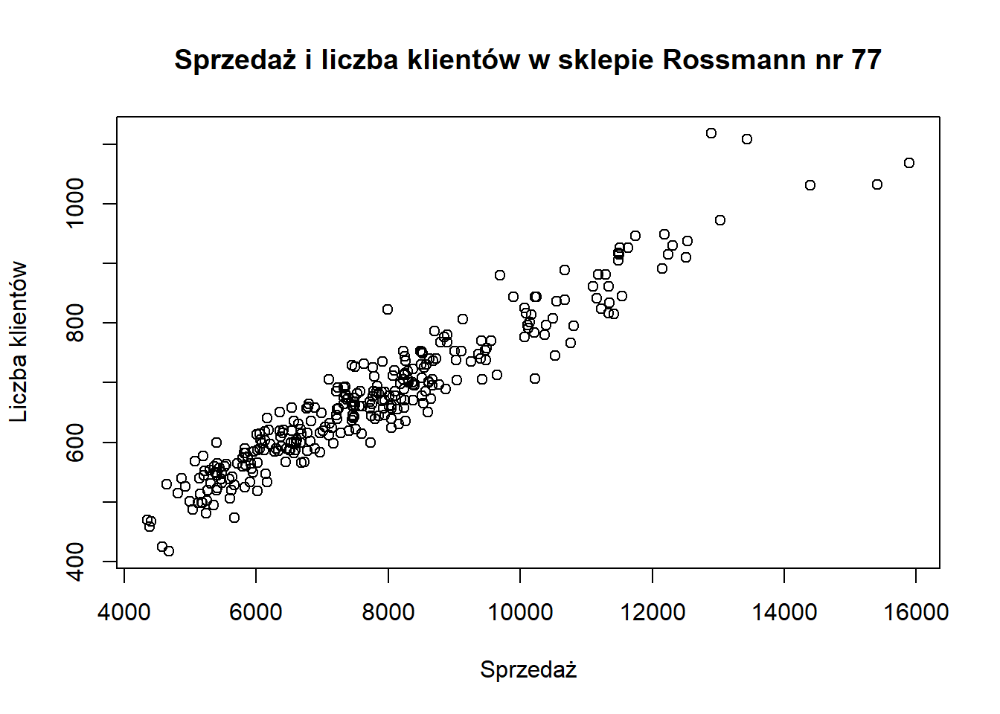
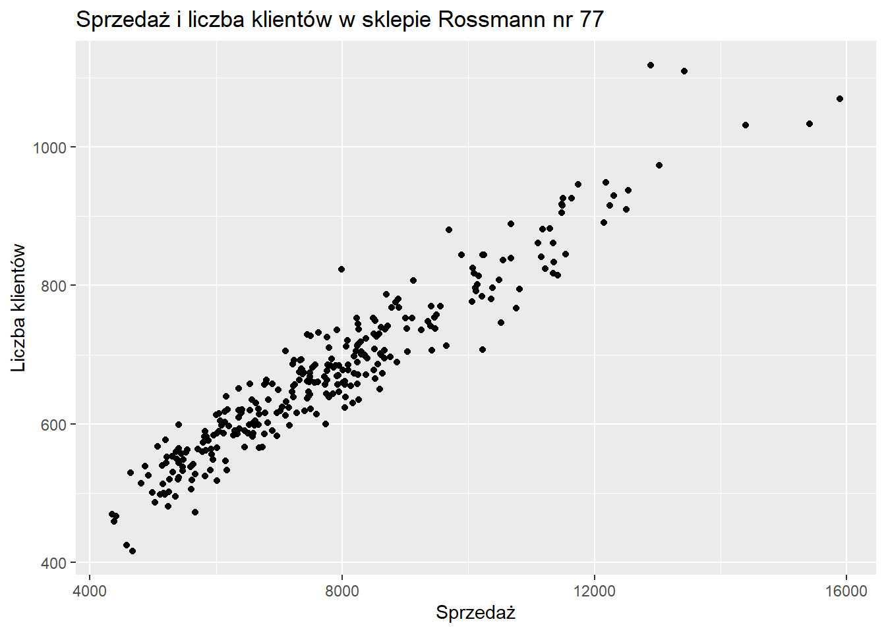
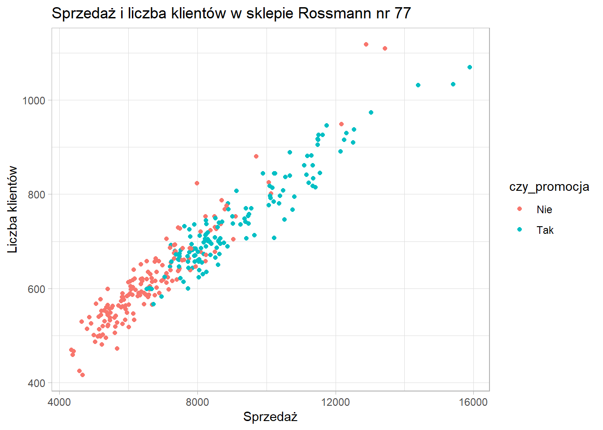
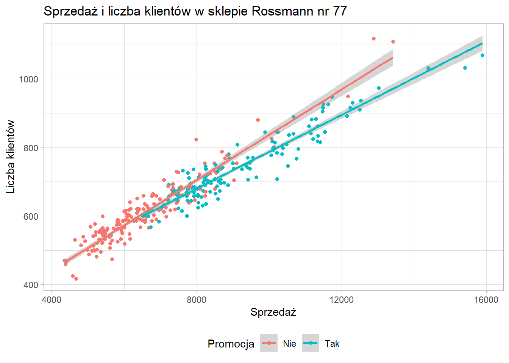
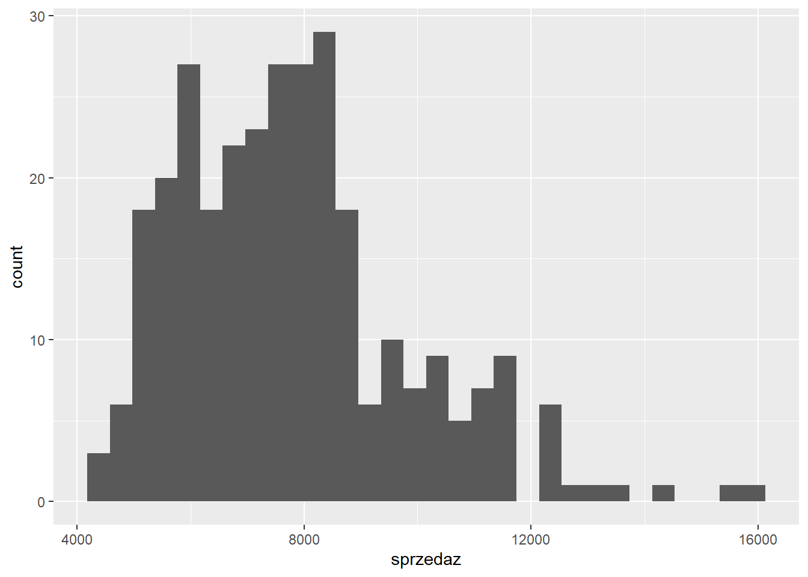
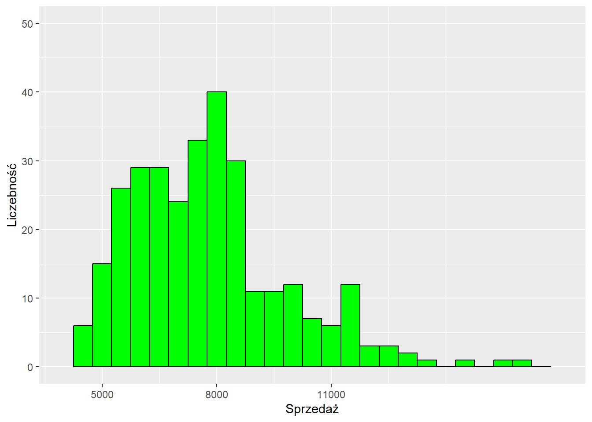
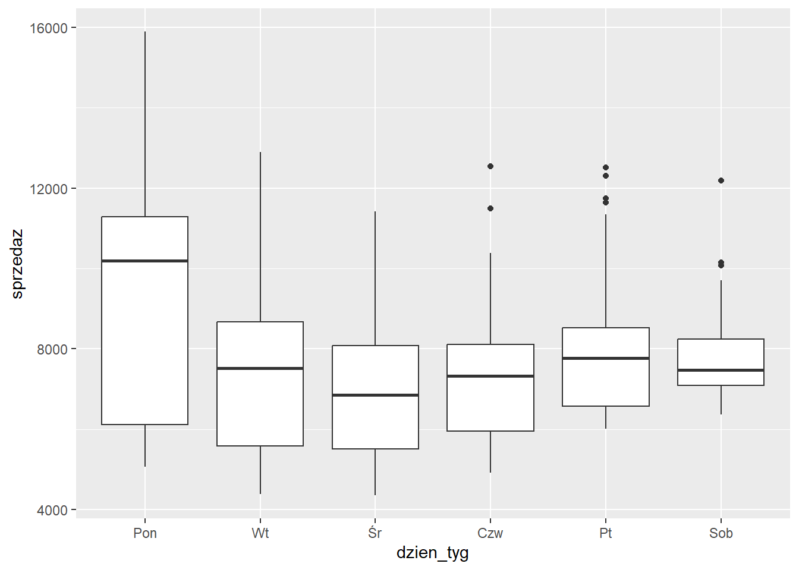
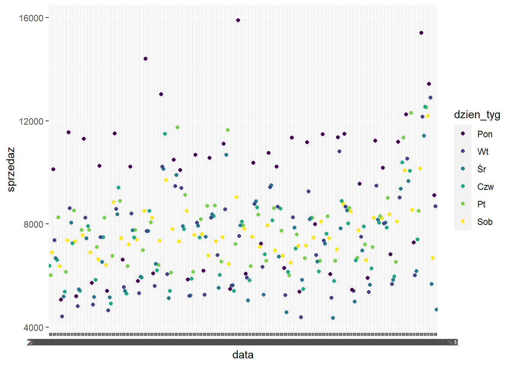
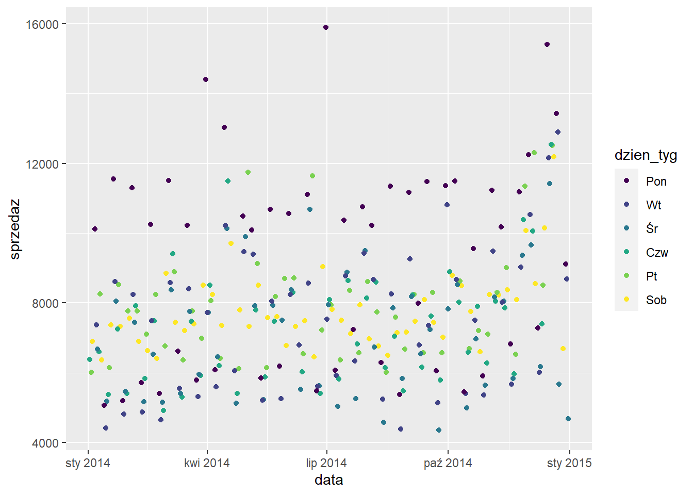

library(tidyverse)
# library(readxl)
#
# rossmann <- read_xlsx("data/rossmann.xlsx")
#
# save(rossmann, file="data/rossmann.RData")
# natywny format, mniejszy rozmiar, szybsze wczytywanie
load("data/rossmann.RData")
sklep77 <- rossmann %>%
filter(sklep_id==77, czy_otwarty=="Tak")4 Wizualizacja danych
4.1 Wprowadzenie
Przewodnik po wizualizacji danych
Fundamentals of Data Visualization
Będziemy działać na zbiorze dotyczącym sprzedaży w sklepach: rossmann.xlsx i rossmann.RData.
Do prostych wykresów można wykorzystać wbudowaną funkcję plot.
plot(sklep77$sprzedaz, sklep77$liczba_klientow,
xlab = "Sprzedaż", ylab = "Liczba klientów",
main = "Sprzedaż i liczba klientów w sklepie Rossmann nr 77")
Jej możliwości są jednak ograniczone i stworzenie bardziej zaawansowanych grafik będzie wymagające.
Wiodącym pakietem do wizualizacji danych w R jest ggplot2:
- dokumentacja: https://ggplot2.tidyverse.org/
- cheatsheet
- tworzenie wykresów poprzez dodawanie (
+) kolejnych warstw
4.2 Wykres punktowy
Ten sam wykres co wcześniej, ale z wykorzystaniem pakietu ggplot2.
Wykonanie krok po kroku:
- Utworzenie siatki - określenie co chcemy na wykresie przedstawić
ggplot(data = sklep77, aes(x=sprzedaz, y=liczba_klientow))W zależności od typu wykresu w funkcji aes mogą znaleźć się argumenty:
- x
- y
- fill
- size
- color
- shape
- Określenie w jaki sposób chcemy te dane przedstawić - funkcja zawsze zaczyna się od
geom_:
ggplot(data = sklep77, aes(x=sprzedaz, y=liczba_klientow)) +
geom_point()- Edytowanie etykiet osi - funkcje
xlabiylab:
ggplot(data = sklep77, aes(x=sprzedaz, y=liczba_klientow)) +
geom_point() +
xlab("Sprzedaż") +
ylab("Liczba klientów")- Dodanie tytułu - funkcja
ggtitle
ggplot(data = sklep77, aes(x=sprzedaz, y=liczba_klientow)) +
geom_point() +
xlab("Sprzedaż") +
ylab("Liczba klientów") +
ggtitle("Sprzedaż i liczba klientów w sklepie Rossmann nr 77")
- Zmiana motywu - funkcja rozpoczynająca się od
theme_:
ggplot(data = sklep77, aes(x=sprzedaz, y=liczba_klientow)) +
geom_point() +
xlab("Sprzedaż") +
ylab("Liczba klientów") +
ggtitle("Sprzedaż i liczba klientów w sklepie Rossmann nr 77") +
theme_light()
Dostępne motywy:
- theme_bw
- theme_classic
- theme_dark
- theme_gray
- theme_light
- theme_linedraw
- theme_minimal
- theme_void
Powyższe motywy są zaimplementowane w pakiecie ggplot2, ale można także skorzystać z dodatkowych pakietów:
Albo stworzyć swój własny motyw.
Zadanie
Zmień motyw wykresu na wybrany przez siebie.
Dodamy teraz do wykresu kolejną cechę - rozpoczęcie promocji, żeby sprawdzić czy istnieje jakaś tendencja.
ggplot(data = sklep77, aes(x=sprzedaz, y=liczba_klientow, color=czy_promocja)) +
geom_point() +
xlab("Sprzedaż") +
ylab("Liczba klientów") +
ggtitle("Sprzedaż i liczba klientów w sklepie Rossmann nr 77") +
theme_light()
Okazuje się dosyć interesująco, niemniej nazwa etykiety legendy nie wygląda zbyt dobrze. Żeby to poprawić musimy użyć funkcji scale_
ggplot(data = sklep77, aes(x=sprzedaz, y=liczba_klientow, color=czy_promocja)) +
geom_point() +
xlab("Sprzedaż") +
ylab("Liczba klientów") +
scale_color_discrete(name = "Promocja") +
ggtitle("Sprzedaż i liczba klientów w sklepie Rossmann nr 77") +
theme_light()W funkcji scale_ musimy podać w jaki sposób daną cechę wizualizujemy (x/y/color/…) oraz jakiego jest typu. Oprócz nazwy w tej funkcji możemy określić wiele innych kwestii takich jak:
- wyświetlane etykiety
- początek i koniec osi
- kolory wariantów
- etykiety wariantów
ggplot(data = sklep77, aes(x=sprzedaz, y=liczba_klientow, color=czy_promocja)) +
geom_point() +
scale_x_continuous(name = "Sprzedaż") +
scale_y_continuous(name = "Liczba klientów") +
scale_color_discrete(name = "Promocja") +
ggtitle("Sprzedaż i liczba klientów w sklepie Rossmann nr 77") +
theme_light()
Zmiana pozycji legendy możliwa jest z wykorzystaniem funkcji theme:
ggplot(data = sklep77, aes(x=sprzedaz, y=liczba_klientow, color=czy_promocja)) +
geom_point() +
scale_x_continuous(name = "Sprzedaż") +
scale_y_continuous(name = "Liczba klientów") +
scale_color_discrete(name = "Promocja") +
ggtitle("Sprzedaż i liczba klientów w sklepie Rossmann nr 77") +
theme_light() +
theme(legend.position = "bottom")ggplot(data = sklep77, aes(x=sprzedaz, y=liczba_klientow, color=czy_promocja)) +
geom_point() +
geom_smooth(method = "lm") +
scale_x_continuous(name = "Sprzedaż") +
scale_y_continuous(name = "Liczba klientów") +
scale_color_discrete(name = "Promocja") +
ggtitle("Sprzedaż i liczba klientów w sklepie Rossmann nr 77") +
theme_light() +
theme(legend.position = "bottom")`geom_smooth()` using formula 'y ~ x'
4.3 Histogram
Rozkład cechy można ocenić na podstawie histogramu - domyślnie rysowanych jest 30 słupków.
ggplot(data = sklep77, aes(x=sprzedaz)) +
geom_histogram()`stat_bin()` using `bins = 30`. Pick better value with `binwidth`.
W funkcji geom_histogram można podać liczbę słupków (bins) albo ich szerokość (binwidth). Poniżej zastosowano słupki o szerokości 1000 euro.
ggplot(data = sklep77, aes(x=sprzedaz)) +
geom_histogram(binwidth = 1000)Dodatkowo w tej funkcji można określić kwestie estetyczne - kolory obramowania i wypełnienia słupków.
ggplot(data = sklep77, aes(x=sprzedaz)) +
geom_histogram(binwidth = 500, color = "black", fill = "green")
Pełna lista nazw kolorów znajduje się tutaj.
Z wykorzystaniem funkcji scale_ zmieniamy nazwy osi (name), granice (limits) oraz wskazania liczbowe (breaks). Te dwie ostatnie wartości musimy deklarować jako wektory z wykorzystaniem funkcji c().
ggplot(data = sklep77, aes(x=sprzedaz)) +
geom_histogram(binwidth = 500,
color = "black", fill = "green") +
scale_x_continuous(name = "Sprzedaż",
limits = c(4000,17000),
breaks = c(5000, 8000, 11000)) +
scale_y_continuous(name = "Liczebność",
limits = c(0,50))Warning: Removed 2 rows containing missing values (geom_bar).
Można zaumatyzować proces dobierania wskazań liczbowych z wykorzystaniem funkcji seq opisanej szerzej w rozdziale 2.1.2.
ggplot(data = sklep77, aes(x=sprzedaz)) +
geom_histogram(binwidth = 500,
color = "black", fill = "green") +
scale_x_continuous(name = "Sprzedaż",
limits = c(4000,17000),
breaks = seq(4000, 17000, 1500)) +
scale_y_continuous(name = "Liczebność",
limits = c(0,50))Warning: Removed 2 rows containing missing values (geom_bar).
4.4 Wykres pudełkowy
Wykres pudełkowy umożliwia porównywanie rozkładów cechy wg zmiennej grupującej. Wymogiem jest aby na osi x znajdowała się zmienna grupująca, a na osi y cecha analizowana.
Przeanalizujemy sprzedaż według kolejnych dni tygodnia.
ggplot(sklep77, aes(x=dzien_tyg, y=sprzedaz)) + geom_boxplot()Warning: Continuous x aesthetic -- did you forget aes(group=...)?Zdecydowanie nie jest wykres jakiego oczekiwaliśmy. Wynika to z faktu, że dzień tygodnia w zbiorze danych jest zapisany jako zmienna numeryczna, natomiast prawidłowym typem dla zmiennej grupującej jest typ tekstowy lub czynnik (faktor). Ten typ danych został szczegółowo opisany w części 2.3.
Dokonujemy zatem zamiany typu danych:
sklep77 <- sklep77 %>%
mutate(dzien_tyg=factor(x = dzien_tyg,
levels = 1:6,
labels = c("Pon", "Wt", "Śr", "Czw", "Pt", "Sob"),
ordered = TRUE))
ggplot(sklep77, aes(x=dzien_tyg, y=sprzedaz)) +
geom_boxplot() 
Z tego wykresu można już odczytać, że najwyższa mediana sprzedaży występuje w poniedziałek, a najniższa w środę.
Jeżli kategorii jest dużo to można obrócić wykres z wykorzystaniem funkcji coord_flip.
ggplot(sklep77, aes(x=dzien_tyg, y=sprzedaz)) +
geom_boxplot() +
coord_flip()Użycie tej funkcji powoduje wyłącznie obrócenie wykresu. Nazwy osi nie uległy zmianie pomimo, że zostały zamienione. Odwrócimy jeszcze kolejność etykiet dnia tygodnia, tak aby na górze był poniedziałek.
ggplot(sklep77, aes(x=dzien_tyg, y=sprzedaz)) +
geom_boxplot() +
coord_flip() +
scale_x_discrete(limits = rev(levels(sklep77$dzien_tyg)))4.5 Wykres słupkowy
W zależności od typu danych wejściowych, wykres słupkowy można stworzyć na dwa sposoby:
- dane jednostkowe -
geom_bar- funkcja sama oblicza wartości do wyświetlenia, - dane zagregowane -
geom_col- funkcja otrzymuje już obliczone wartości.
Sprawdźmy ile jest sklepów o danym asortymencie. W tym celu potrzebujemy informację o sklepie i typie oferowanego asortymentu.
rossmann_asort <- rossmann %>%
select(sklep_id, sklep_asort) %>%
distinct()
glimpse(rossmann_asort)Rows: 1,115
Columns: 2
$ sklep_id <dbl> 1, 2, 3, 4, 5, 6, 7, 8, 9, 10, 11, 12, 14, 15, 16, 17, 18,…
$ sklep_asort <chr> "Podstawowy", "Podstawowy", "Podstawowy", "Rozszerzony", "…W funkcji aes podajemy tylko kolumnę zawierającą dane do zliczenia.
ggplot(rossmann_asort, aes(x=sklep_asort)) +
geom_bar()Natomiast użycie funkcji geom_col wymaga samodzielnego obliczenia wartości:
rossmann_asort2 <- rossmann_asort %>%
count(sklep_asort)
glimpse(rossmann_asort2)Rows: 3
Columns: 2
$ sklep_asort <chr> "Extra", "Podstawowy", "Rozszerzony"
$ n <int> 9, 593, 513Wartość do wyświetlenia podajemy w funkcji aes w argumencie y.
ggplot(rossmann_asort2, aes(x=sklep_asort, y=n)) +
geom_col()Uporządkujemy etykiety osi x (obecnie są wyświetlane w kolejności alfabetycznej) tworząc czynnik.
rossmann_asort2 <- rossmann_asort2 %>%
mutate(sklep_asort=factor(x = sklep_asort,
levels = c("Podstawowy",
"Rozszerzony",
"Extra"),
ordered = T))
glimpse(rossmann_asort2)Rows: 3
Columns: 2
$ sklep_asort <ord> Extra, Podstawowy, Rozszerzony
$ n <int> 9, 593, 513ggplot(rossmann_asort2, aes(x=sklep_asort, y=n)) +
geom_col()Do wykresu słupkowego możemy dodać jeszcze jedną zmienną. W tym przypadku będzie to typ sklepu.
rossmann_asort3 <- rossmann %>%
select(sklep_id, sklep_asort, sklep_typ) %>%
distinct() %>%
count(sklep_asort, sklep_typ) %>%
mutate(sklep_asort=factor(x = sklep_asort,
levels = c("Podstawowy",
"Rozszerzony",
"Extra"),
ordered = T))
glimpse(rossmann_asort3)Rows: 9
Columns: 3
$ sklep_asort <ord> Extra, Podstawowy, Podstawowy, Podstawowy, Podstawowy, Roz…
$ sklep_typ <chr> "b", "a", "b", "c", "d", "a", "b", "c", "d"
$ n <int> 9, 381, 7, 77, 128, 221, 1, 71, 220Uwzględnienie kolejnej zmiennej jest możliwe jako argument fill w funkcji aes.
ggplot(rossmann_asort3, aes(x=sklep_asort, y=n, fill=sklep_typ)) +
geom_col()Domyślnie kategorie są układane jedna na drugą - stack. Można je ułożyć obok siebie dodając argument position = "dodge" w funkcji geom_col.
ggplot(rossmann_asort3, aes(x=sklep_asort, y=n, fill=sklep_typ)) +
geom_col(position = "dodge")Możemy jeszcze dodać etykiety słupków wykorzystując funkcję geom_text, w której trzeba podać argumenty definujące położenie wartości etykiet. Wartości tych argumentów będą zależały od typu wykresu.
ggplot(rossmann_asort3, aes(x=sklep_asort, y=n, fill=sklep_typ)) +
geom_col(position = "dodge") +
geom_text(aes(label = n),
position = position_dodge(width = 0.9),
vjust = -0.3)Zmienimy jeszcze nazwę legendy za pomocą funkcji scale_fill_discrete. Wykorzystujemy tę konkretną funkcję ze względu na to, że typ sklepu jest argumentem fill w funkcji aes oraz cechą jakościową (discrete).
ggplot(rossmann_asort3, aes(x=sklep_asort, y=n, fill=sklep_typ)) +
geom_col(position = "dodge") +
geom_text(aes(label = n),
position = position_dodge(width = 0.9),
vjust = -0.3) +
scale_fill_discrete(name = "Typ sklepu")
4.6 Wykres kafelkowy
Do wizualizacji tabeli częstości można użyć wykresu kafelkowego. W tym celu najpierw zliczamy wystąpienia wariantów cech czy_promocja oraz czy_swieto_szkolne i wynik przekazujemy bezpośrednio do funkcji ggplot().
sklep77 %>%
count(czy_promocja, czy_swieto_szkolne) %>%
ggplot(aes(x = czy_promocja,
y = czy_swieto_szkolne,
fill = n)) +
geom_tile()Aby dodać do tego wykresu etykiety posłużymy się funkcją geom_label()
sklep77 %>%
count(czy_promocja, czy_swieto_szkolne) %>%
ggplot(aes(x = czy_promocja,
y = czy_swieto_szkolne,
fill = n)) +
geom_tile() +
geom_label(aes(label = n), color = "white")Zwykle patrząc na wykres podświadomie zakładamy, że ciemniejszy kolor oznacza wyższe wartości, natomiast jasny małe liczby. W tym przypadku układ kolorów jest odwrócony. Musimy odpowiednio dobrać kolory, aby to poprawić. Bardzo przydatne narzędzie znajduje się pod adresem: http://colorbrewer2.org/. Następnie korzystamy z funkcji scale_fill_gradient, w której określamy tylko kolor początkowy i końcowy.
sklep77 %>%
count(czy_promocja, czy_swieto_szkolne) %>%
ggplot(., aes(x = czy_promocja,
y = czy_swieto_szkolne,
fill = n)) +
geom_tile() +
geom_label(aes(label = n), color = "white") +
scale_fill_gradient(low = "#66c2a4",
high = "#005824")4.7 Uwzględnienie czasu
Próba stworzenia wykresu przedstawiającego zmianę sprzedaży w czasie za pomocą oryginalnych danych spowoduje uzsykanie niezbyt czytelnej grafiki.
ggplot(sklep77, aes(x=data,
y=sprzedaz,
color=dzien_tyg)) +
geom_point()
Wynika to z faktu, że dzien tygodnia jest traktowany jak zmienna numeryczna, a data jest zmienną tekstową. Konwersja tekstu na datę jest możliwa z wykorzystaniem pakietu lubridate. W tym pakiecie każda część daty ma swój akronim, który później jest wykorzystywany w odpowiednich funkcjach:
- y - rok (year)
- m - miesiąc (month)
- d - dzień (day)
- h - godzina (hour)
- m - minuta (minute)
Przykłady funkcji:
- ymd - konwertuje tekst zapisany w postaci rok-miesiąc-dzień na obiekt daty
- dmy_hm - konwertuje tekst zapisany w postaci dzień-miesiąc-rok godzina:minuta na obiekt daty
- month - pobiera z obiektu daty informację o miesiącu
- year - pobiera z obiektu daty informację o roku
- week - pobiera z obiektu daty informację o tygodniu roku
Według powyższych reguł korzystamy z funkcji ymd() do konwersji daty w naszym zbiorze.
library(lubridate)
sklep77a <- sklep77 %>%
mutate(dzien_tyg=as.factor(dzien_tyg),
data=ymd(data))
ggplot(sklep77a, aes(x=data,
y=sprzedaz,
color=dzien_tyg)) +
geom_point()
4.8 Facets
sr_sprzedaz <- rossmann %>%
filter(sprzedaz > 0) %>%
group_by(sklep_id, sklep_asort) %>%
summarise(sprzedaz_sr=mean(sprzedaz))`summarise()` has grouped output by 'sklep_id'. You can override using the
`.groups` argument.odleglosc <- rossmann %>%
select(sklep_id, sklep_konkurencja) %>%
distinct()
sprzedaz_odleglosc <- inner_join(sr_sprzedaz, odleglosc, by="sklep_id")
ggplot(sprzedaz_odleglosc, aes(x=sprzedaz_sr, y=sklep_konkurencja)) +
geom_point() +
facet_wrap(~ sklep_asort)Warning: Removed 3 rows containing missing values (geom_point).
sr_sprzedaz_prom <- rossmann %>%
filter(sprzedaz > 0) %>%
group_by(sklep_id, czy_promocja) %>%
summarise(sprzedaz_sr=mean(sprzedaz))`summarise()` has grouped output by 'sklep_id'. You can override using the
`.groups` argument.sprzedaz_prom_odl <- inner_join(sr_sprzedaz_prom, odleglosc)Joining, by = "sklep_id"head(sprzedaz_prom_odl)# A tibble: 6 × 4
# Groups: sklep_id [3]
sklep_id czy_promocja sprzedaz_sr sklep_konkurencja
<dbl> <chr> <dbl> <dbl>
1 1 Nie 4288. 1270
2 1 Tak 5274. 1270
3 2 Nie 3902. 570
4 2 Tak 6295. 570
5 3 Nie 5286. 14130
6 3 Tak 8790. 14130ggplot(sprzedaz_prom_odl, aes(x=sprzedaz_sr, y=sklep_konkurencja, color=czy_promocja)) +
geom_point()Warning: Removed 6 rows containing missing values (geom_point).Zamiana reprezentacji danych na szeroką.
sprzedaz_prom_odl_wide <- sprzedaz_prom_odl %>%
spread(czy_promocja, sprzedaz_sr)
head(sprzedaz_prom_odl_wide)# A tibble: 6 × 4
# Groups: sklep_id [6]
sklep_id sklep_konkurencja Nie Tak
<dbl> <dbl> <dbl> <dbl>
1 1 1270 4288. 5274.
2 2 570 3902. 6295.
3 3 14130 5286. 8790.
4 4 620 9030. 10686.
5 5 29910 3473. 6084.
6 6 310 4189. 6295.I na wąską.
sprzedaz_prom_odl_long <- sprzedaz_prom_odl_wide %>%
gather(czy_promocja, sprzedaz_sr, Nie, Tak)
head(sprzedaz_prom_odl_long)# A tibble: 6 × 4
# Groups: sklep_id [6]
sklep_id sklep_konkurencja czy_promocja sprzedaz_sr
<dbl> <dbl> <chr> <dbl>
1 1 1270 Nie 4288.
2 2 570 Nie 3902.
3 3 14130 Nie 5286.
4 4 620 Nie 9030.
5 5 29910 Nie 3473.
6 6 310 Nie 4189.4.9 Wykres interaktywny
Za pomocą pakietu plotly w prosty sposób można zamienić statystyczny wykres ggplot na interaktywny.
library(plotly)
p <- ggplot(data = sklep77, aes(x=sprzedaz, y=liczba_klientow, color=czy_promocja)) +
geom_point() +
scale_x_continuous(name = "Sprzedaż") +
scale_y_continuous(name = "Liczba klientów") +
scale_color_discrete(name = "Promocja") +
ggtitle("Sprzedaż i liczba klientów w sklepie Rossmann nr 77") +
theme_light() +
theme(legend.position = "bottom")
plotly::ggplotly(p)Zadanie
Stwórz trzy grafiki dla danych dotyczących filmów.
filmy <- read.csv("data/movies.csv")
summary(filmy) title genre director year
Length:2961 Length:2961 Length:2961 Min. :1920
Class :character Class :character Class :character 1st Qu.:1999
Mode :character Mode :character Mode :character Median :2004
Mean :2003
3rd Qu.:2010
Max. :2016
duration gross budget cast_facebook_likes
Min. : 37.0 Min. : 703 Min. : 218 Min. : 0
1st Qu.: 95.0 1st Qu.: 12276810 1st Qu.: 11000000 1st Qu.: 2241
Median :106.0 Median : 34703228 Median : 26000000 Median : 4604
Mean :109.6 Mean : 58090401 Mean : 40619384 Mean : 12394
3rd Qu.:119.0 3rd Qu.: 75590286 3rd Qu.: 55000000 3rd Qu.: 16926
Max. :330.0 Max. :760505847 Max. :300000000 Max. :656730
votes reviews rating
Min. : 5 Min. : 2.0 Min. :1.600
1st Qu.: 19918 1st Qu.: 199.0 1st Qu.:5.800
Median : 55749 Median : 364.0 Median :6.500
Mean : 109308 Mean : 503.3 Mean :6.389
3rd Qu.: 133348 3rd Qu.: 631.0 3rd Qu.:7.100
Max. :1689764 Max. :5312.0 Max. :9.300 Z racji mnogości gatunków można ograniczyć się do kilku wybranych.